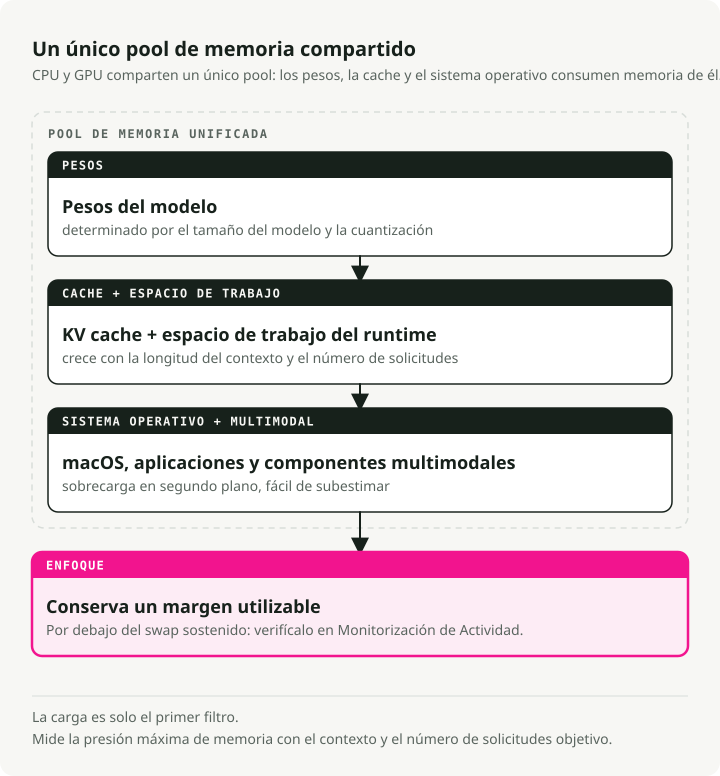
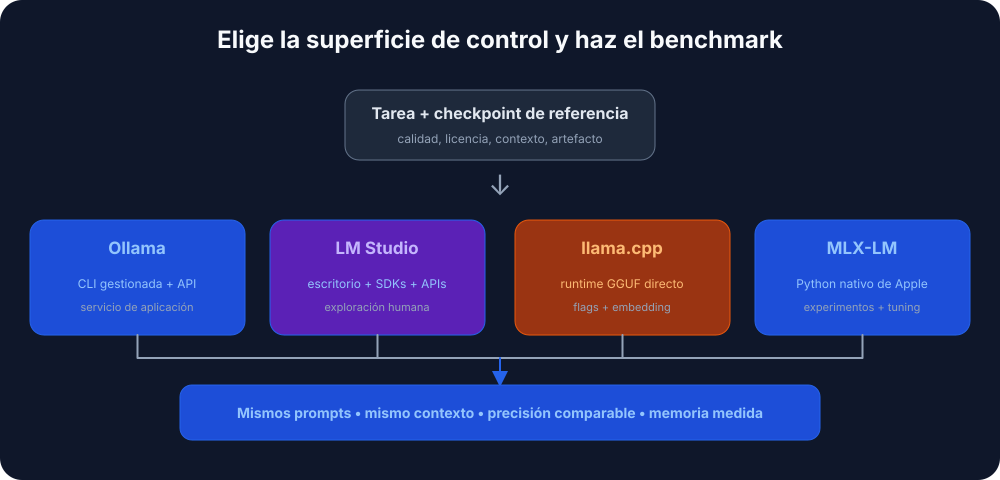

Traducción automática
Este artículo se tradujo automáticamente a partir de la versión original en inglés.
LLM locales en macOS: Ollama, LM Studio, llama.cpp, MLX y Apple Silicon
Enviar cada prompt a una API de terceros acaba cansando, sobre todo cuando la mitad de los prompts son "reescribe este párrafo" o "cuál es el esquema JSON de esto". Los LLM locales me resolvieron eso en Apple Silicon más rápido de lo que esperaba. Un modelo de 7B en cuantización de 4 bits funciona con comodidad en un MacBook de 16 GB, y el viaje de ida y vuelta termina en el teclado.
Así que la pregunta abierta es con qué aplicación moverlo. Ollama, LM Studio, llama.cpp, MLX y unas cuantas más encapsulan motores de inferencia similares y los mismos archivos GGUF. Se diferencian en cuánta fricción hay entre tú y el modelo: en un extremo, doble clic y escribir; en el otro, compilar desde código fuente y luego leer la página del manual.
Conceptos clave para los LLM locales en macOS
- Inferencia: ejecutar el modelo para generar texto.
- Cuantización (GGUF): una técnica para reducir el tamaño del modelo con una pérdida mínima de calidad. Verás nombres de archivo como
llama-3-8b-Q4_K_M.gguf. La parteQ4significa cuantización de 4 bits, que usa mucha menos RAM que los pesos completos de 16 bits. - Apple Silicon (Metal): los chips de la serie M de Apple comparten RAM entre CPU y GPU (Apple lo llama "Unified Memory"). Por eso un MacBook con 32 GB o 64 GB puede cargar modelos que en un PC necesitarían una GPU dedicada cara.
Requisitos previos
- Hardware: lo que quieres es un Mac con Apple Silicon (de M1 a M4). Los Mac Intel funcionan, pero son notablemente más lentos.
- RAM:
- 8GB: suficiente para modelos pequeños (Mistral 7B, Llama 3 8B).
- 16GB+: cómodo para modelos más grandes y multitarea.
- Espacio en disco: los modelos son grandes. Cuenta con unos 10-20 GB para una biblioteca inicial útil.

1. Ollama - La opción "simplemente funciona"
Descarga: ollama.com
Piensa en Ollama como el "Docker para LLM". Encapsula el motor llama.cpp en un paquete nativo de macOS, descarga modelos bajo demanda y envía el trabajo a Metal automáticamente. Lo instalas, ejecutas un comando y ya estás chateando. Es la vía más sencilla si solo quieres un LLM funcional y un endpoint HTTP al que apuntar tu código.
Flujo de trabajo de ejemplo
# 1. Download and run Llama 3 (it auto-downloads if needed)
ollama run llama3
# 2. Use it in your code via the local API
curl http://localhost:11434/api/generate -d '{
"model": "llama3",
"prompt": "Explain quantum computing to a 5-year-old",
"stream": false
}'
Ventajas e inconvenientes
| ✅ Ventajas | ❌ Inconvenientes |
|---|---|
Configuración más fácil (arrastrar y soltar .dmg) |
La aplicación principal es closed-source |
CLI limpia (ollama list, ollama pull) |
Menos control granular sobre los parámetros de generación |
| Gran biblioteca de modelos preconfigurados |
2. LM Studio - El explorador visual
Descarga: lmstudio.ai
LM Studio es la opción centrada en GUI. Tiene un navegador estilo App Store para buscar directamente en HuggingFace, admite el formato MLX de Apple junto con GGUF (que puede ser más rápido en algunos Mac) y expone un servidor local compatible con OpenAI. Así que el código cliente existente que ya habla con OpenAI, en su mayor parte, funciona sin cambios.
Flujo de trabajo de ejemplo
Puedes usar el SDK oficial de Python, o cualquier cliente compatible con OpenAI apuntando al servidor local:
# Using the official LM Studio SDK
from lmstudio import LMStudio
client = LMStudio()
response = client.complete(
model="llama-3-8b",
prompt="Write a haiku about debugging."
)
print(response.content)
Ventajas e inconvenientes
| ✅ Ventajas | ❌ Inconvenientes |
|---|---|
| Interfaz pulida y fácil de usar | La GUI es closed-source |
| Soporte nativo para modelos GGUF y MLX | Descarga más grande (~750MB) |
| RAG integrado (chatea con tus PDF) |
3. llama.cpp - La herramienta para usuarios avanzados
Repo: github.com/ggml-org/llama.cpp
Este es el motor que encapsulan casi todas las demás herramientas. Si quieres el máximo rendimiento, las últimas funciones el mismo día en que aparecen, o integrar un LLM en tu propia aplicación C++, esta es la fuente. Va a bajo nivel y es ligero, pero el precio es que lo gestionas todo tú: descargas, formatos y decenas de flags de CLI.
Flujo de trabajo de ejemplo
# 1. Install via Homebrew
brew install llama.cpp
# 2. Download a model manually (e.g., from HuggingFace)
huggingface-cli download TheBloke/Llama-3-8B-Instruct-GGUF --local-dir .
# 3. Run inference with full control
llama-cli -m llama-3-8b-instruct.Q4_K_M.gguf \
-p "Write a python script to sort a list" \
-n 512 \
--temp 0.7 \
--ctx-size 4096
Ventajas e inconvenientes
| ✅ Ventajas | ❌ Inconvenientes |
|---|---|
| Control total sobre cada parámetro | Curva de aprendizaje pronunciada (solo CLI) |
| Licencia MIT (open source) | Gestión manual de modelos |
| Muy ligero (<30MB) |
4. GPT4All - Privacidad primero y RAG
Descarga: gpt4all.io
GPT4All se basa en dos ideas: privacidad y documentos. Su función estrella, LocalDocs, te permite apuntar la aplicación a una carpeta de PDF, notas o código y chatear directamente con el contenido. Todo funciona offline y sin telemetría. Es la forma más sencilla de tener un RAG funcional en tu máquina sin escribir nada de código.
Ventajas e inconvenientes
| ✅ Ventajas | ❌ Inconvenientes |
|---|---|
| LocalDocs RAG funciona bien nada más instalarlo | Solo GUI (sin modo headless) |
| Completamente offline y privado | Uso de recursos más alto que Ollama |
| Multiplataforma (Mac, Windows, Linux) |
5. KoboldCPP - Para narradores
Repo: github.com/LostRuins/koboldcpp
Un fork de llama.cpp orientado a la escritura creativa y a RPG de estilo mesa. Se ejecuta como una aplicación web local con herramientas para generación de texto largo: "World Info", memoria de personajes y hacks de consistencia narrativa que intentan mantener el modelo en el camino durante miles de tokens. El público objetivo son escritores y gente que ejecuta RPG basados en texto; si lo que más quieres es chat o programación, la interfaz normal se te quedará estrecha.
Flujo de trabajo de ejemplo
# 1. Download the single binary
wget https://github.com/LostRuins/koboldcpp/releases/latest/download/koboldcpp-mac.zip
# 2. Run it (launches a web server)
./koboldcpp --model llama-3-8b.gguf --port 5001 --smartcontext
Ventajas e inconvenientes
| ✅ Ventajas | ❌ Inconvenientes |
|---|---|
| Buenas herramientas para escritura creativa | UI de nicho (no ideal para programación/chat) |
| Ejecutable de un solo archivo (sin instalación) | Licencia AGPL (restrictiva para uso comercial) |
Mención honorable: MLX-LM
Si eres desarrollador Python en Apple Silicon, echa un vistazo a MLX-LM de Apple. Es un framework ajustado para los chips de la serie M y, con el hardware adecuado, suele ser la forma más rápida de ejecutar un modelo en local. La contrapartida es que te lleva menos de la mano que Ollama: más Python, menos guardarraíles.
Resumen: ¿qué herramienta es la adecuada para ti?
Un árbol de decisión rápido:

Tabla comparativa rápida
| Tool | Interface | Difficulty | Best feature |
|---|---|---|---|
| Ollama | CLI / Menu Bar | ⭐ (Easy) | "Just Works" experience |
| LM Studio | GUI | ⭐ (Easy) | Model discovery & UI |
| GPT4All | GUI | ⭐ (Easy) | Chat with local docs (RAG) |
| KoboldCPP | Web UI | ⭐⭐ (Medium) | Creative writing tools |
| llama.cpp | CLI | ⭐⭐⭐ (Hard) | Raw performance & control |
Qué elegir en la práctica
- Empieza con Ollama si solo quieres tener algo funcionando hoy.
- Recurre a LM Studio si prefieres explorar modelos visualmente primero.
- Baja a llama.cpp cuando necesites control total sobre la inferencia.